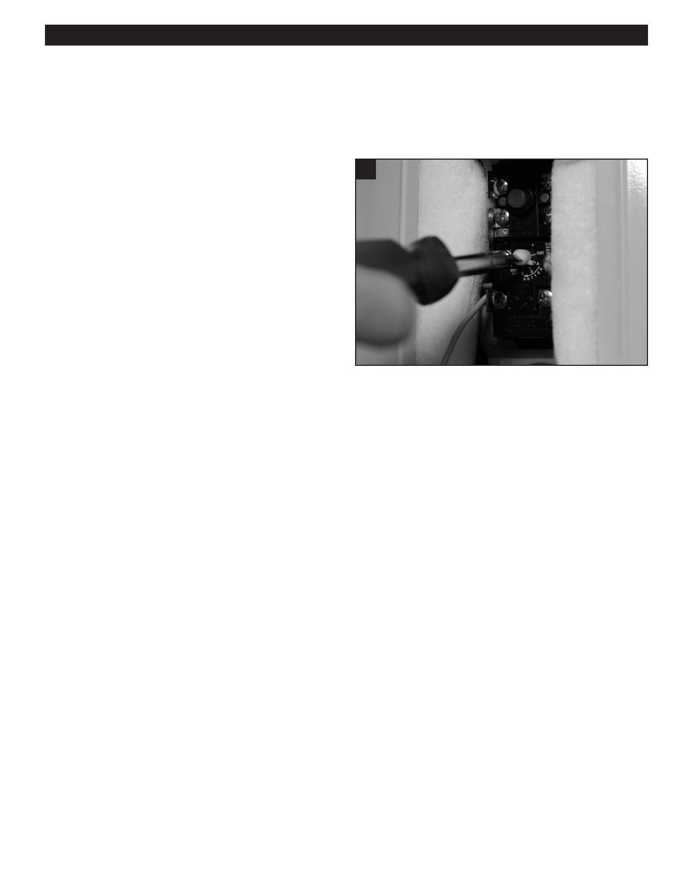

PA RT I C I PA N T R E S O U R C E G U I D E
Electric Water Heaters: Replacing the Thermostat
(continued)
How-to-Steps
1. Turn off the power to the water heater.
9
2. Open the panel to the thermostat.
3. Use a multimeter or circuit tester to make sure power
is off.
• Touch probes to the top set of terminal screws.
• If the meter display shows power, or if the tester
light goes on, the power is still on.
4. Disconnect the thermostat wires and label the
connections with masking tape.
5. Pull out the old thermostat.
6. Put in the new thermostat.
7. Connect the thermostat wires correctly.
9. Set the thermostat temperature using a screwdriver. (Check
8. Press the reset button on the thermostat.
the thermostat setting on the old thermostat. The arrow should
9. Set the thermostat temperature using a screwdriver.
point to selected temperature.)
(Check the thermostat setting on the old thermostat.
The arrow should point to selected temperature.)
10. Close the panel to the thermostat.
11. Restore the power to the water heater.
90